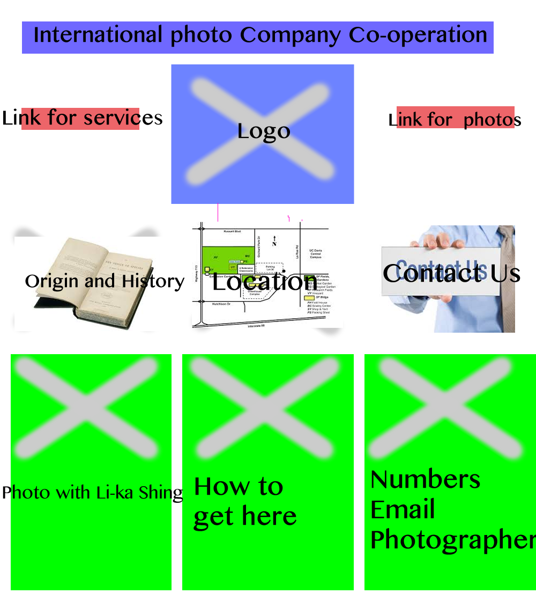

Progress Check for Objectives
After Mr. Chiu's enligtening lecture on the purpose of the website, I have realized that it is better to keep it simple .
I have to fit my information on 4xA4 sides and make it ideal for people to visit a simple website made by an AIS student.
After thinking ideally and in a simple minded view, I have cut down the Marketing website and the website for E-news. This si because theses websites obviosly cannot fit into 4xA4 sides.
The two ideas from the four, I have chosen to do either psychology or english.
A striking idea then hit me that I could help out with my family business. I remembered one day my father, uncles, and cousins were talking about how many of their customers are not from the
internet, however many more could be attracted by the power of internet, rather than fully relying on brand name and exhibitons.
From all the proposals on eaglenet, we have decided to work on Helen's grandfather's photography company.
The purpose of this project is so Helen's granddad(client) can expand his photography business by attracting today's new high technology generation.
The audience of this project are new generation adults and teenagers who want to have either passport/visa sized photos or formal posing photo (family, friends, wedding)
The purpose of this project is for the audience to know the location, services, photographers, history, etc etc.
Our client is Helen's Grandad
I think it is important to meet him ASAP because we need to know what his problems are and his goals by making a new website.
What we want to solve for Helen's granddad is too ideally help him expand his business. His photography business goes up to many generations and heritage, thus it is only well-known with old peopkle. By making a website on the internet that the recent and young generation are constantly using, we can help him expand his business. A google search relating to his services that could lead to his website could increase his business as a whole because everytime somebody views his website, the brand is getting well-known.
| Create a website for Helen's dad; that can solve his problems | |
| Use trello to plan and work on problems | |
| Use lucidchart to make a flowchart to breakdown website essentials | |
| Use GitHub group planning website to record progressment | |
Today I learnt some amazing features on firework. I learnt how to wireframe and skills that go along with it to evenly distrubute my boxes.
Here is my wireframe
This is the homepage I made in fireworks
The strengths of using Fireworks
The weaknesses of using Fireworks